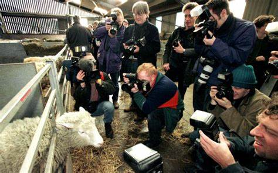
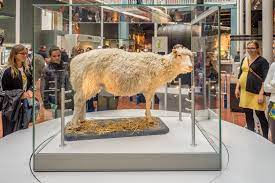
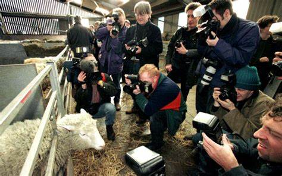
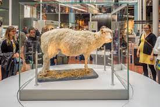

What is cloning?:
Cloning is a technique that scientists utilise to make an exact genetic copy of a living thing. This can include
tissues, genes, cells or even a whole animal! Which we will explore more of below with Dolly. Clones already existed
in nature without the help of scientists in labs. An example of this is single-celled organisms, some single-celled
bacteria reproduce by making exact copies of themselves. People have always joked that human identical twins are
clones and the study of identical twins goes back a long time. But identical twins are similar to clones in that they
share almost the exact same genes, since they are created when a fertilised egg splits in two.
The Roslin Institute:
The Roslin Institute is an animal sciences research institute, situated in Midlothian Scotland and is funded by
the Biotechnology and Biological Sciences Research Council. On July 5th, 1996, a female Finnish Dorset sheep
named Dolly was born there and she was born there purely for the purpose of producing a clone. The Roslin
Institute’s goal was to better develop a method of producing genetically modified livestock. Upon victory,
this would mean fewer animals would be needed for future experiments in labs. Scientists at Roslin also wanted
to learn more about how cells change during development and whether a specialised cell, such as a skin or brain
cell, could be used to make a whole new animal.These experiments were carried out at The Roslin Institute by a team led by
Professor Sir Ian Wilmut
. Because of the nature of the research, the team was made up of many different people,
including scientists, embryologists, surgeons, vets and farm staff.
Dolly was cloned from a cell taken from the mammary gland of a six-year-old Finn Dorset sheep and an egg cell taken from a Scottish Blackface sheep. She was born to her Scottish Blackface surrogate mother on 5th July 1996. Dolly’s white face was one of the first signs that she was a clone because if she was genetically related to her surrogate mother, she would have had a black face.
Because Dolly’s DNA came from a mammary gland cell, she was named after the country singer Dolly Parton. Dolly was important because she was the first mammal to be cloned from an adult cell. Her birth proved that specialised cells could be used to create an exact copy of the animal they came from. This knowledge changed what scientists’ thought was possible and opened up a lot of possibilities in biology and medicine, including the development of personalised stem cells known as iPS cells.
.jpg)
Previous cloning experiments:
However, Dolly was not the first ever cloned mammal. That honour belongs to another sheep which
was cloned from an embryo cell and born in 1984 in Cambridge, UK. Two other sheep, Megan and Morag,
had also been cloned from embryonic cells grown in the lab at The Roslin Institute in 1995 and
six other sheep, cloned from embryonic and foetal cells, were born at Roslin at the same time as
Dolly. What made Dolly so special was that she had been made from an adult cell, which no-one at
the time thought was possible.
Dolly's life:
Dolly spent her life at The Roslin Institute and, apart from the occasional media appearance,
led a normal life with the other sheep at the Institute. Over the years Dolly had a total of six
lambs with a Welsh Mountain ram called David. Dolly continued to have a normal quality of life
until February 2003, when she developed a cough. A CT scan showed tumours growing in her lungs
and the decision was made to euthanise Dolly rather than risk her suffering. Dolly was put to
sleep on 14th February 2003, at the age of six.
After her death The Roslin Institute donated Dolly’s body to the National Museum of Scotland in Edinburgh, where she has become one of the museum’s most popular exhibits. Dolly is back on display in the museum after an extensive gallery refurbishment, alongside an interactive exhibit on the ethics of creating transgenic animals featuring current research from The Roslin Institute.
After Dolly:
Following the success of his cloning research at The Roslin Institute, Professor Ian Wilmut began to focus
on using cloning to make stem cells which could be used in regenerative medicine. He moved to the
University of Edinburgh in 2005 to continue this work on stem cells, becoming the first Director of
the MRC Centre for Regenerative Medicine the following year. Dolly’s birth proved that scientists could turn
back the clock on a fully developed adult cell to make it behave like a cell from a newly fertilised embryo
and this encouraged researchers in Edinburgh and across the world to investigate other techniques to reprogram
adult cells, ultimately leading to the discovery of induced Pluripotent Stem (iPS) cells.
Dolly begs the
question, could the cloning of humans ever be possible? South Korean experiments on the cloning of primates
have been unsuccessful, however the cloning of man's best friend the dog has been.
 



References:
www.dolly.roslin.ed.ac.uk
www.scotland.org
www.wikipedia.org